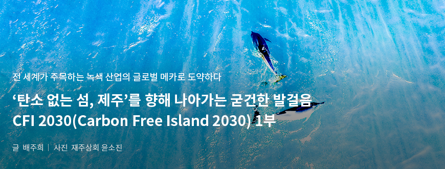
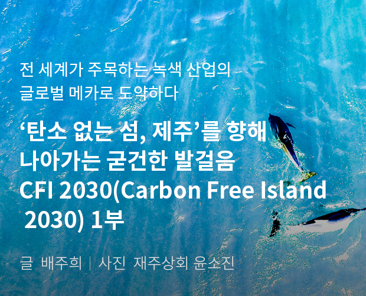
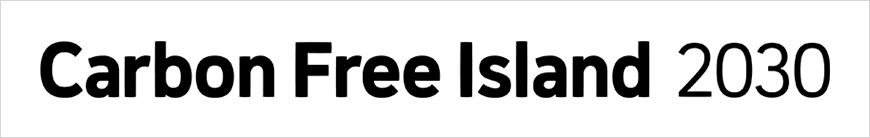
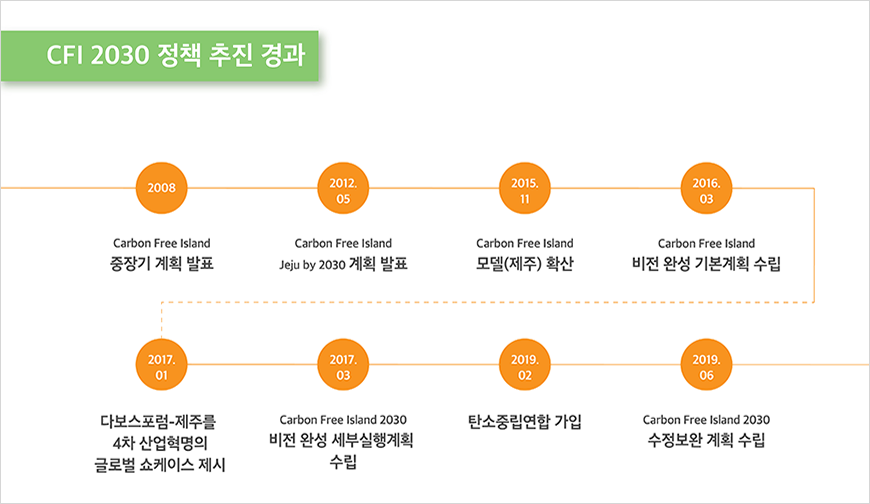
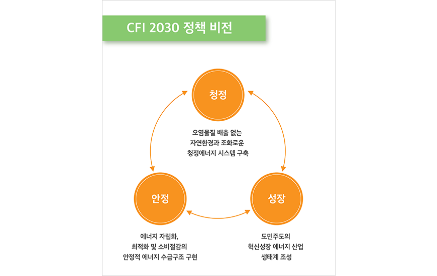
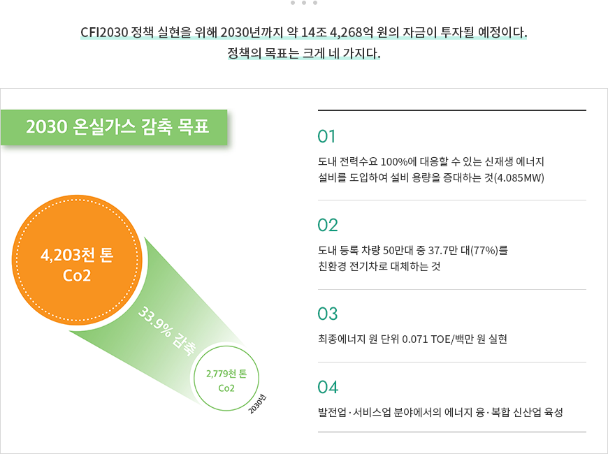

기획취재콘텐츠
- Home
- 제주라이프
- 기획취재콘텐츠
CFI 2030(Carbon Free Island 2030) 1부새로운 글


산업화가 남긴 눈부신 유산은 인류에게 윤택한 삶을 안겨주었지만, 환경파괴와 자원고갈 문제 또한 우리의 손에 쥐여 주었다. 이상 기후로 인한 자연재난이 일어날 때마다 대중 사이에선 ‘지구가 아프다’는 표현이 자주 오르내린다. 이는 문제의 심각성과 이를 개선하기 위한 노력의 필요성을 다수가 이미 인지하고 있다는 방증이기도 하다. 무분별한 개발과 발전으로 이룩하는 경제 성장이 이제 더는 미덕이 아니며, 지속가능성과 공존이라는 키워드가 발전의 핵심으로 부상한 것이다.
1992년, 리우데자네이루 지구정상회의의 기후변화협약을 시작으로 온실가스 감축을 위한 전 세계적 노력이 첫 싹을 틔웠다. 그리고 올해는 2015년 12월 채택된 파리기후변화협정이 본격적으로 발효되는 해로, 대한민국을 포함한 195개 당사국은 온실가스 감축에 의무적으로 참여해야 한다. 신(新)기후체제 시대, 이러한 국제적 흐름과 궤를 같이하며 제주도가 능동적으로 선보인 정책이 있다. 바로 <탄소 없는 섬, 제주 2030 (Carbon Free Island 2030, 이하 CFI 2030) 계획>. 이는 기후 변화 시대가 요구하는 친환경적인 산업 구조로의 재편과 동시에 안정적인 성장, 즉 녹색 산업을 선도하는 글로벌 메카로서 도약하기 위한 과감하고도 선제적인 움직임이다.

탄소 없는 섬을 향한 제주의 선제적 움직임, CFI 2030
CFI 2030 계획의 시작은 2008년으로 거슬러 올라간다. 국제유가가 배럴당 100달러를 호가하는 고유가 시대에 대비하여 제주도만의 에너지 절약정책과 제주에서 부존하는 재생가능에너지를 통해 온실가스 감축 및 에너지 자립 추진을 골자로 한 ‘Carbon Free Island’라는 명칭의 중장기 계획을 발표한 것이다. 이 명칭은 2012년 5월 다양한 정책을 종합한 제주형 저탄소녹색성장 모델인 <Carbon Free Island Jeju by 2030> 계획으로 발표되면서 전 세계의 이목을 집중시켰고, 현재에 이르러 제주도의 가장 핵심적인 정책으로 확대해나가고 있다.


CFI 2030 정책 추진 경과
- 2008-Carbon Free Island 중장기 계획 발표
- 2012.05-Carbon Free Island Jeju by 2030 계획 발표
- 2015.11-Carbon Free Island 모델(제주) 확산
- 2016.03-Carbon Free Island 비전 완성 기본계획 수립
- 2017.01-다보스포럼-제주를 4차 산업혁명의 글로벌 쇼케이스 제시
- 2017.03-Carbon Free Island 2030 비전 완성 세부실행계획 수립
- 2019.02-탄소중립연합 가입
- 2019.02-Carbon Free Island 2030 수정보완 계획 수립

CFI 2030의 비전은 청정, 안정, 성장이라는 세 가지 키워드다. 오염물질 배출 없는 자연환경과 조화로운 청정에너지 시스템을 구축하고, 에너지 자립화·최적화 및 소비 절감을 통해 안정적 에너지 수급구조를 구현하며, 도민주도의 혁신 성장 에너지 산업 생태계를 조성하는 것이다. 이는 신(新) 기후체제에 돌입한 국제적 노력에 함께하는 것은 물론, 도의 에너지 안정성과 자주성을 확립하고, 그 과정에서 도민에게 유익한 산업생태계를 조성하고 성장시켜 제주형 에너지 산업 구조를 공고히 만들겠다는 의지가 담겨 있다.

- 청정 - 오염물질 배출 없는 자연환경과 조화로운 청정에너지 시스템 구축
- 성장 - 도민주도의 혁신성장 에너지 산업 생태계 조성
- 안정 - 에너지 자립화, 최적화 및 소비절감의 안정적 에너지 수급구조 구현


CFI 2030 정책 실현을 위해 2030년까지 약 14조 4,268억 원의 자금이 투자될 예정이다. 정책의 목표는 크게 네 가지다.
2030 온실가스 감축 목표-4,203천 톤 Co2 → 2,779천 톤 Co2 (33.9% 감축)
- 도내 전략수요 100%에 대응할 수 있는 신재생 에너지 설비를 도입하여 설비 용량을 증대하는 것 (4,085MW)
- 도내 등록 차량 50만대 중 37.7만대(77%)를 친환경 전기차로 대체하는 것
- 최종에너지 원 단위 0.071 TOE/백만 원 실현
- 발전업 서비스업 분야에서의 에너지 융복합 신산업 육성

위 네 가지 정책목표는 CFI 2030 계획을 현실로 만들기 위해 핵심이 되는 두 개의 산업 축으로 모인다. 바로 전기차 산업과 신재생 에너지 산업이다.
이전글
이전글이 없습니다.